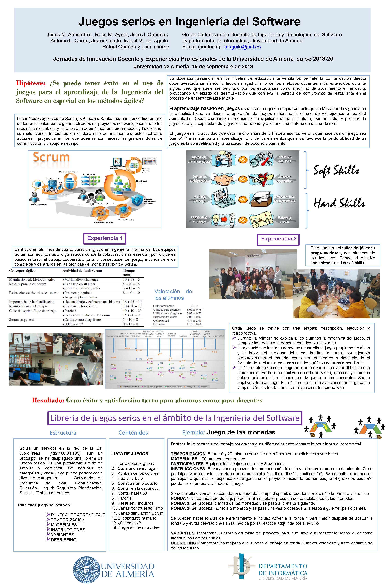
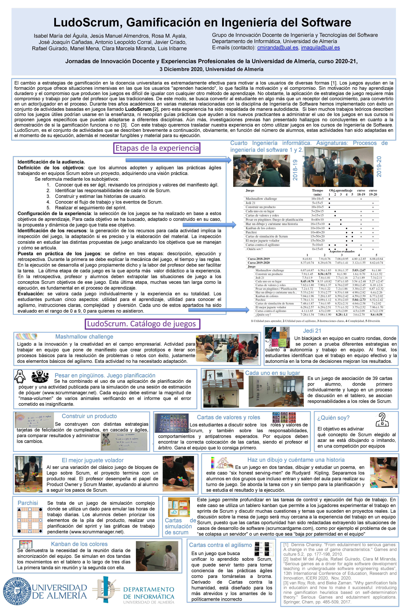

Actividades basadas en Juegos serios para aprender Ingeniería del Software
El objetivo de este material es servir de soporte para compartir actividades basadas en juegos serios para la docencia en materias de ingeniería del software. En muchos casos se trata de la adapción o simplemente traducción de activides ampliamente conocidas.
Cómo aprender Ingeniería del Software
El software está presente en sistemas de todo tipo: transportes, sanidad, telecomunicaciones, militares, procesos industriales, entretenimiento, productos de oficina, etc.; la lista cubre todas las actividades humanas. Estas aplicaciones conducen a la toma de decisiones comerciales, sirven como base a la investigación científica moderna, contribuyen a la resolución de problemas de ingeniería y son el factor clave que diferencia los productos y servicios modernos. Son muchos los casos en los que las personas dejan su trabajo, bienestar, seguridad, entretenimiento, decisiones y sus propias vidas en manos de software informático.
Todo esto ha llevado a un cambio en la percepción pública del software que debe desarrollarse como cualquier otro producto industrial, aplicando métodos de ingeniería que aseguren la calidad del producto resultante, sin embargo se hace necesario utilizar metodologías propias que se adapten al carácter innovador de esta disciplina.
Sin embargo hacer que los alumnos desarrollen las competencias necesarias para aplicar estos métodos no es tarea fácil. La docencia presencial en los niveles de educación universitarios permite la comunicación directa docente/estudiante siendo la lección magistral uno de los métodos docentes más extendidos durante siglos, pero que suele ser percibido por los estudiantes como sinónimo de aburrimiento e ineficacia, provocando un estado de desmotivación que conlleva la pérdida de compromiso del estudiante en el proceso de enseñanza aprendizaje.
El aprendizaje basado en juegos es una estrategia de mejora docente que está cobrando vigencia en la actualidad que va desde la aplicación de juegos serios hasta el uso de videojuegos o realidad aumentada. Deben diseñarse manteniendo un equilibrio entre la materia, por un lado y por otro la jugabilidad y la capacidad del jugador para retener y aplicar dicha materia en el mundo real.
Estos juegos formativos son herramientas que permiten formar a los participantes ayudándoles a experimentar, aprender de sus propios errores y adquirir experiencia en un entorno seguro y sin coste, además de mejorar la motivación de los alumnos en el proceso de aprendizaje.
Referencia
Referenciar este trabajo empleando las siguientes cualquiera de las dos siguientes:
Referencia:
I.M. del Aguila, R. Guirado, C.M. Miranda (2020) SERIOUS GAMES AS A DRIVER FOR TEACHING AGILE SOFTWARE DEVELOPMENT IN UNDERGRADUATE SOFTWARE ENGINEERING STUDIES, ICERI2020 Proceedings, pp. 1036-1044.
doi: 10.21125/iceri.2020.0294 enlace libreria IATED
Referencia:
I.M. Del Águila, J. Del Sagrado, A. Bosch (2021) GUIDELINES FOR USE SERIOUS GAMES IN SOFTWARE ENGINEERING TEACHING, INTED2021 Proceedings, pp. 2742-2749.
doi: 10.21125/inted.2021.0586 enlace libreria IATED

